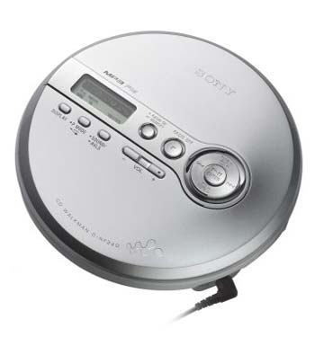

Sony D-NF340 CD Walkman & MP3 Player w/FM Tuner
Features
Burn MP3 audio files onto CD-R/RW discs and listen for up to 16 hours with the D-NF340 MP3 Walkman? CD player. This versatile player not only plays CDs with MP3 audio, it also has a digital FM tuner with 40 presets for a variety of music tastes. The simple, 1-line LCD displays MP3 information encoded in 7 different languages for easy identification of disc, track and artist names. And with 12 playback modes and reliable, Skip-Free G-Protection™ technology, you will have a continuous soundtrack of your favorite tunes wherever you go.